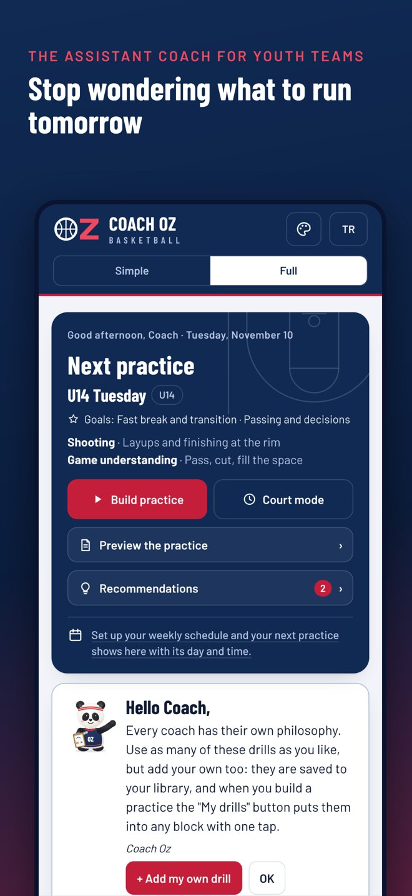
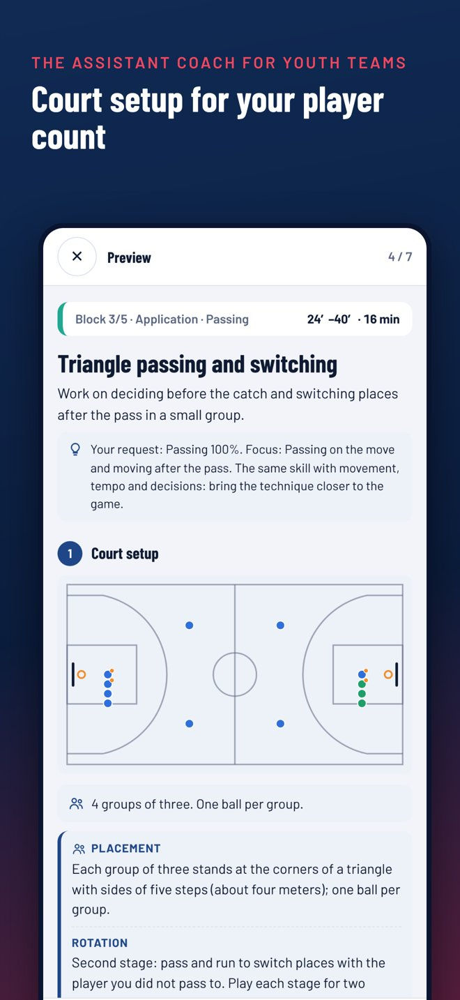
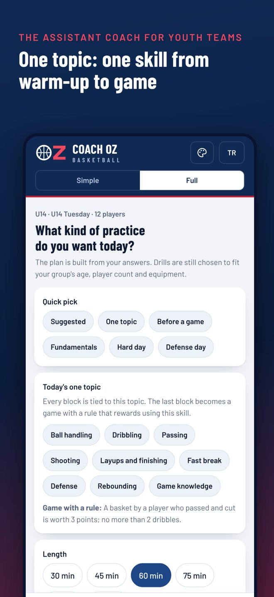

For youth basketball coaches
Your next practice,
planned in 1 minute.
Describe your team once – age, level, players, balls and hoops – and Coach Oz Basketball builds the whole practice for you.
- Practices built for your team's age, level and player count
- 300+ drills with diagrams, 50+ offensive sets, 20 team defenses
- One-topic practices that end in a rule-based game
- Court mode with a big timer, one-page PDF court sheet, season plan
Download on the App Store
First 2 practices free · 7-day free trial of Pro · iPhone & iPad


